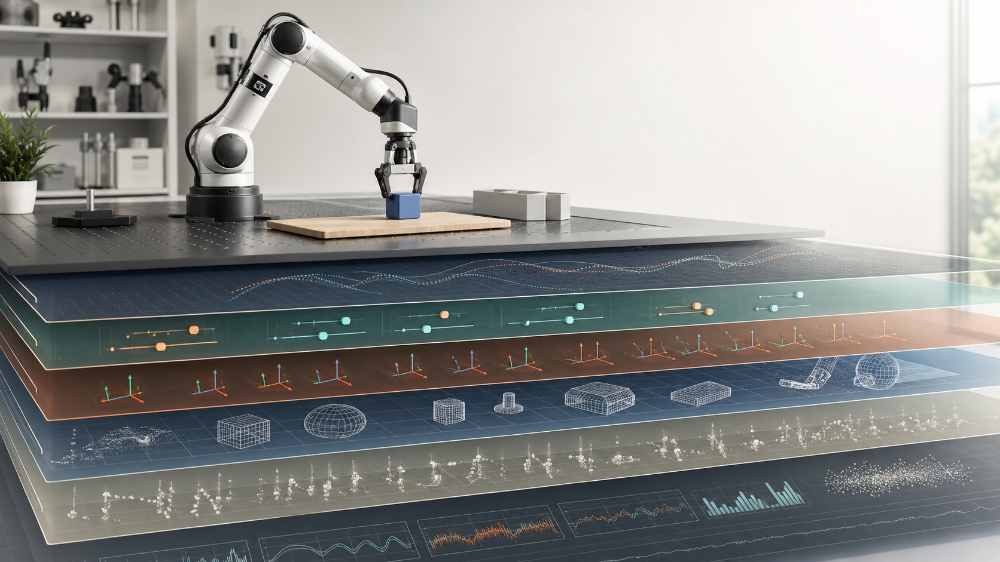
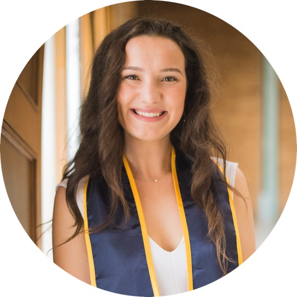
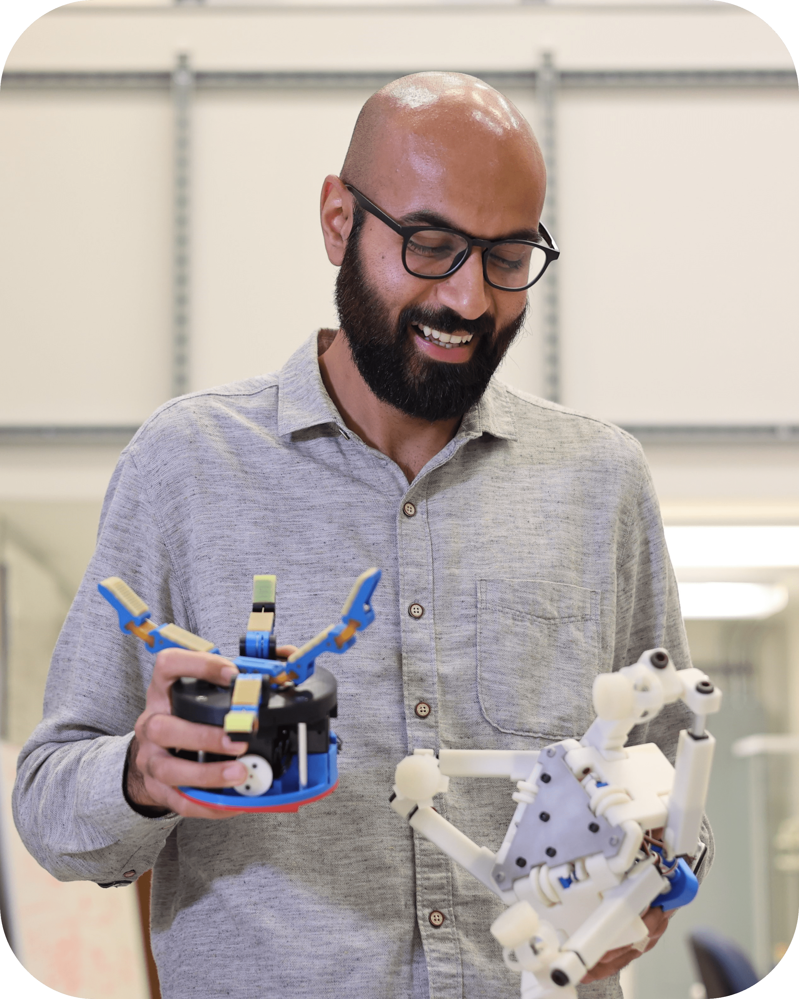
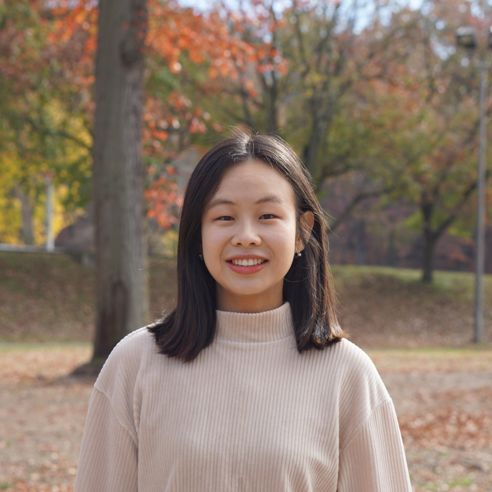
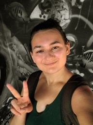
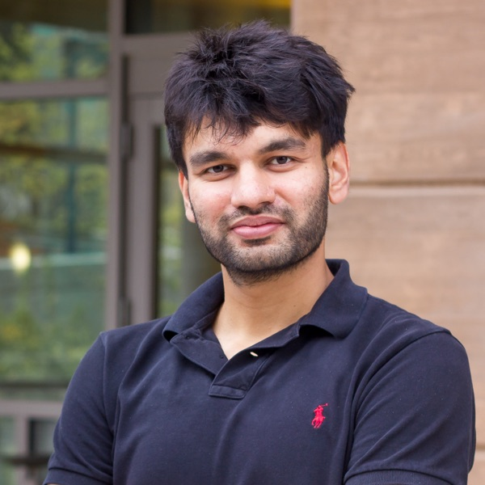

Zeynep Temel
Associate Professor, CMU Robotics Institute

How controllers, hardware, data infrastructure shape robot learning
Robot learning has recently made striking progress in challenging domains such as dexterous manipulation, legged locomotion, and whole-body control. These advances are often credited to better policies, achieved through improved network architectures, novel learning algorithms, and, perhaps most importantly, increased data scale.
However, robot policies do not exist in a vacuum, and neither does the data used for training. Instead, they sit on top of multiple layers of design choices constituting a complex robot system that spans from data collection to deployment. Our workshop will focus explicitly on these design decisions: everything that sits beneath the policy. The process of training a robot policy and its outcome hinges on the kinematics and dynamics of the body being controlled, the type of actuators and low-level controllers, the action and observation spaces exposed to the policy, the sensing and data collection pipeline, the choice of a simulator, the evaluation protocol, and much more.
Although such design choices are essential to create every robot-learning result, they are rarely treated as an object of study in their own right. Instead, such components are often described as mere implementation details or left implicit in hardware, software, and lab-specific defaults. Recent studies reveal that these choices can heavily determine which behaviors are reachable, which behaviors are easy to learn, and which algorithms appear to work best. A method that succeeds with one set of design decisions may fail with another, and an apparent algorithmic improvement may partly reflect the substrate on which the method was trained, evaluated, and deployed.
This workshop makes these robotics design decisions a central object of study. It asks which non-policy choices are impactful, which can be measured, which remain hidden in vendor defaults, and how they interact with each other. We will bring together robot-learning researchers, platform builders, control and simulation researchers, dataset and benchmark builders, industry practitioners, and students centered around the goal of making these hidden design choices explicit, measurable, and easier to report.
Associate Professor, CMU Robotics Institute
Full Professor (W3), TU Darmstadt; Head, DFKI SAIROL
Director of Robot Behavior, Atlas, Boston Dynamics
Incoming Assistant Professor of CS, UMD
The half-day workshop is built around four confirmed invited talks, contributed lightning previews, a poster session, a moderated panel, and a closing synthesis. Speakers will be asked to attend the full session so they can join the panel and engage with contributed papers. Exact placement will depend on whether CoRL assigns the workshop to the morning or afternoon block.
| 8:30–8:40 | Opening framing. Organizers introduce the four open challenges and the reporting-artifact goal. |
| 8:40–9:10 | Speaker 1. Invited talk. |
| 9:10–9:40 | Speaker 2. Invited talk. |
| 9:40–10:10 | Speaker 3. Invited talk. |
| 10:10–10:30 | Lightning previews. Short contributed-paper previews and poster setup before the conference coffee break. |
| 10:30–11:00 | Coffee break and posters. Accepted papers are presented as posters during the conference coffee break. |
| 11:00–11:30 | Speaker 4. Invited talk. |
| 11:30–12:10 | Panel discussion. Speakers and contributed-paper authors discuss what papers should report and how the field should study the substrate, with time for audience discussion. |
| 12:10–12:30 | Closing synthesis. Themes from talks, posters, and panel; checklist takeaways and pointers to the post-workshop artifact. |
| 2:00–2:10 | Opening framing. Organizers introduce the four open challenges and the reporting-artifact goal. |
| 2:10–2:40 | Invited Talk: Jan Peters. |
| 2:40–3:10 | Invited Talk: Hao-Shu Fang. |
| 3:10–3:30 | Lightning previews. Short contributed-paper previews and poster setup before the conference coffee break. |
| 3:30–4:00 | Coffee break and posters. Accepted papers are presented as posters during the conference coffee break. |
| 4:00–4:30 | Invited Talk: Zeynep Temel. |
| 4:30–5:00 | Invited Talk: Alberto Rodriguez. |
| 5:00–5:40 | Panel discussion. Speakers and contributed-paper authors discuss what papers should report and how the field should study the substrate, with time for audience discussion. |
| 5:40–6:00 | Closing synthesis. Themes from talks, posters, and panel; checklist takeaways and pointers to the post-workshop artifact. |
Submissions Open
Paper deadline:
Time remainingCalculating…
We solicit 4-page (excluding references) contributed papers on any aspect of the hardware, control, or data infrastructure beneath robot learning. In-scope contributions include:
Review. Reviews will be double blind through OpenReview, with 2–3 reviewers per paper. Papers will be selected based on what they teach the community about the substrate beneath the policy, not on state-of-the-art task performance. Best paper awards, sponsored by ROBOTIS, will recognize especially strong submissions with $1000 worth of credit.
Format. Accepted papers will receive poster slots. Selected authors will receive lightning previews and may be invited to participate in the panel.
Exclusions. Per CoRL 2026 policy, papers already accepted to the main CoRL 2026 conference are not eligible. Concurrent submissions to other venues are permitted if disclosed.
All dates are in 2026.
| Submissions open. | |
| Submission deadline. 11:59 p.m. Central Time. | |
| – | Review period. |
| Acceptance notification. | |
| Camera-ready and poster/lightning confirmation. | |
| Workshop. |
Workshop Sponsor
ROBOTIS is sponsoring $1000 worth of credit for the workshop's Best Paper Awards.
ROBOTIS (Robot is...) is a leading global robotics solutions provider specializing in high-precision, intelligent actuators designed for Physical AI and advanced robotic systems. Research institutions, universities, and innovative startups — including numerous Physical AI companies worldwide — rely on ROBOTIS’s comprehensive DYNAMIXEL series. These all-in-one smart actuators integrate a motor, controller, driver, and networking capabilities into compact, high-performance modules. They empower the development of diverse applications, including teleoperation systems, semi-humanoids, full humanoids, delivery robots, dexterous manipulators, robot hand, and intelligent automation platforms.
The credit can be used toward ROBOTIS hardware such as DYNAMIXEL actuators, TurtleBot3 and OpenMANIPULATOR kits, controllers, and related robotics accessories.
The organizers commit to producing a Design Choice Reporting Checklist v0.1 after the workshop. The checklist will synthesize lessons from invited talks, contributed papers, posters, the panel, and audience discussion. It will cover hardware and embodiment, motors and actuation, kinematics, controller gains and rates, action spaces, observations, demonstrations, simulation, reward design, and reset distributions.
The goal is to make the checklist specific enough for prospective authors and reviewers to use. After the workshop, we will circulate a draft to speakers and contributed-paper authors, incorporate feedback, and publicly release the checklist with a short whitepaper on open challenges, candidate methodologies, and community follow-up.
Younghyo Park
MIT CSAIL
Lead contact

Antonia Bronars
MIT CSAIL

Vatsal V. Patel
MIT Postdoc

Sha Yi
UC San Diego Postdoc

Kehlani Fay
UC San Diego PhD

Pulkit Agrawal
MIT CSAIL
Contact: younghyo@mit.edu